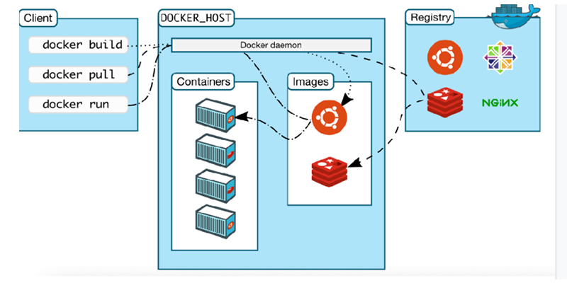
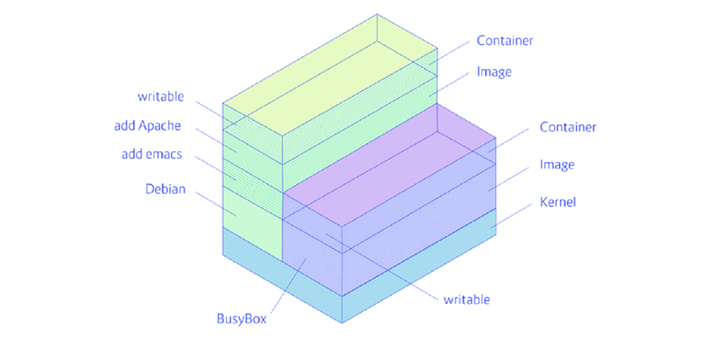
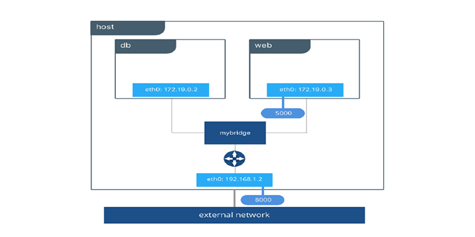

Key Takeaways
Topics Discussed:
- Brief History
- Container
- Docker
- Docker Image Registry
- Docker Images
- Docker Files
- Docker Container
- Docker Volumes
- Docker Networking
Brief History
● Physical machines→Virtual Machine’s→Containers
Container
● A number of processes are isolated from other parts of the OS.
● Rely on a feature of OS kernel called namespaces
● Some Containerization tools are Docker,rkt,CRI-O,containerd.
● Tools will, accept your container order create enough namespaces for your container and starts the container
Docker

Docker important path locations
● /var/run/docker.sock -Socket file through which docker CLI communicates with Daemon
● /var/lib/docker/ - Images, Runtime filesystems etc
● /var/lib/docker/volumes/ - volumes are created here
Commands to start with
● docker images - Lists images already pulled in your local machine
● docker pull
● docker run –d
●docker ps - Will show all running containers and its details
● docker stop
Docker image Registry
● Famous registry is dockerhub
● It has HTTP API and authentication mechanism (for private mages)
● When “docker pull
Also “docker push
Docker images
● A set of read only files and instructions on how to start a container
● Images are created by running the command `docker build` by passing a Dockerfile as argument
● Dockerfile has all the information and environment variables
● Docker push
Docker files
A Dockerfile is a text document that contains all the commands a user could call on the command line to assemble an image. Using docker build users can create an automated build that executes several command-line instructions in succession. This page describes the commands you can use in a Dockerfile
Docker Container
A Docker container image is a lightweight, standalone, executable package of software that includes everything needed to run an application: code, runtime, system tools, system libraries and settings.

Docker Volume
Docker volumes are a widely used and useful tool for ensuring data persistence while working in containers. Docker volumes are file systems mounted on Docker containers to preserve data generated by the running container.
● The data doesn't persist when that container no longer exists, and it can be difficult to get the data out of the container if another process needs it.
● A container's writable layer is tightly coupled to the host machine where the container is running. The data cannot be easily moveable somewhere else.
● Writing into a container's writable layer requires a storage driver to manage the filesystem
● Commands for usecase
● docker volume create --name my-vol
● docker run -v /home/adrian/data:/data debian
Docker Networking
